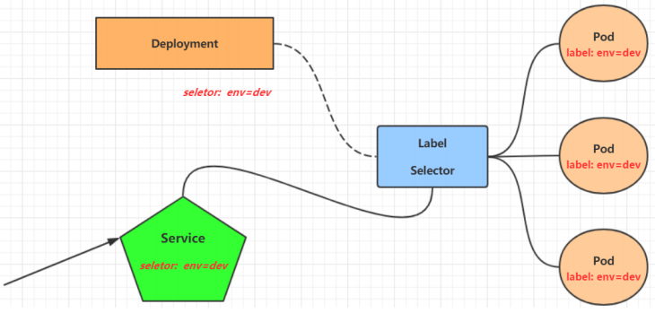
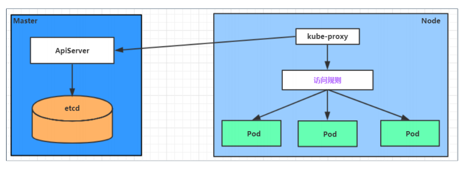
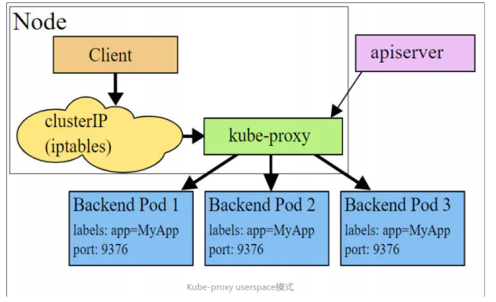
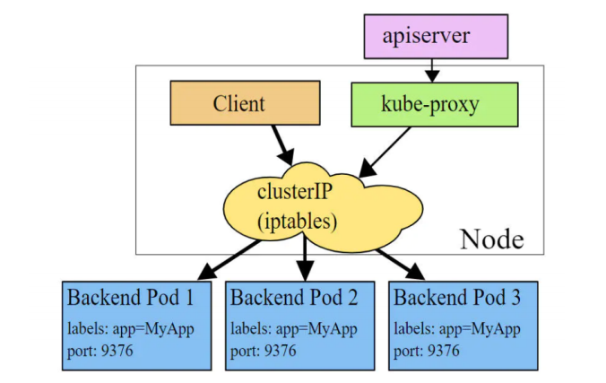
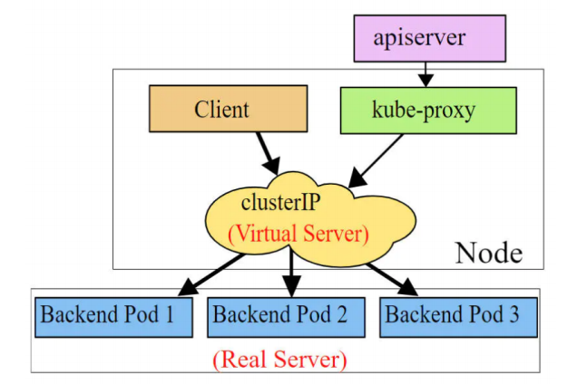
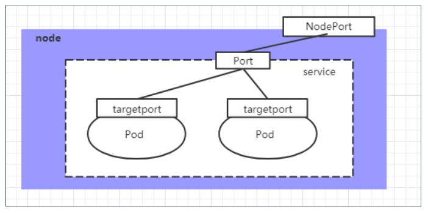
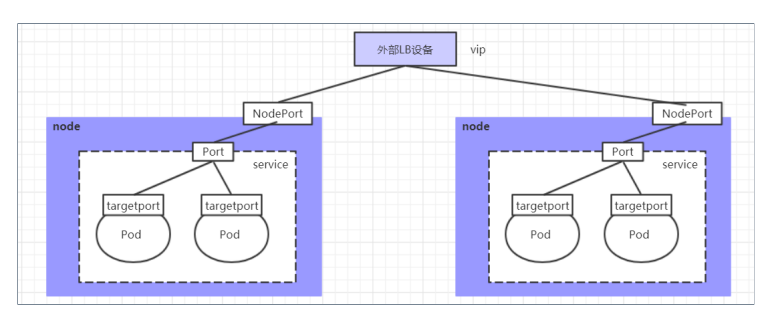
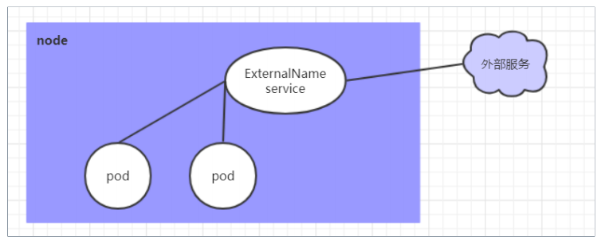

14.Kubernetes_Service
Kubernetes-Service
Service 提供对一个服务的多个 Pod 进行聚合，并且提供一个统一的入口地址，通过访问 Service 的入口地址能够访问后面的 Pod 服务。

Service 大多时候只是一个概念，起作用的是 kube-proxy 服务进程，每个 Node 节点上都运行着一个 kube-proxy 服务进程。当创建 Service 的时候会通过 api-server 向 etcd 写入创建的 service 的信息，而 kube-proxy 会基于监听的机制发现这种 Service 的变动，然后它会将最新的 Service 信息转换成对应的访问规则。

1 | # 10.97.97.97:80 是service提供的访问入口 |
kube-proxy 的三种工作模式
userspace 模式
userspace 模式下，kube-proxy 会为每一个 Service 创建一个监听端口，发向 Cluster IP 的请求被 Iptables 规则重定向到 kube-proxy 监听的端口上，kube-proxy 根据 LB 算法选择一个提供服务的 Pod 并和其建立链接，以将请求转发到 Pod 上。 该模式下，kube-proxy 充当了一个四层负责均衡器的角色。由于 kube-proxy 运行在 userspace 中，在进行转发处理时会增加内核和用户空间之间的数据拷贝，虽然比较稳定，但是效率比较低。

iptables 模式
iptables 模式下，kube-proxy 为 service 后端的每个 Pod 创建对应的 iptables 规则，直接将发向 Cluster IP 的请求重定向到一个 Pod IP。 该模式下 kube-proxy 不承担四层负责均衡器的角色，只负责创建 iptables 规则。该模式的优点是较 userspace 模式效率更高，但不能提供灵活的 LB 策略，当后端 Pod 不可用时也无法进行重试。

ipvs 模式
kube-proxy 监控 Pod 的变化并创建相应的 ipvs 规则。ipvs相对 iptables 转发效率更高。除此以外，ipvs 支持更多的 LB 算法。

1 | # 此模式必须安装ipvs内核模块，否则会降级为iptables |
Service 类型
1 | kind: Service # 资源类型 |
ClusterIP：默认值，它是 Kubernetes 系统自动分配的虚拟 IP，只能在集群内部访问
NodePort：将 Service 通过指定的 Node 上的端口暴露给外部，通过此方法，就可以在集群外部访问服务
LoadBalancer：使用外接负载均衡器完成到服务的负载分发，注意此模式需要外部云环境支持
ExternalName： 把集群外部的服务引入集群内部，直接使用
ClusterIP 类型
1 | apiVersion: v1 |
EndPoint
Endpoint是 kubernetes 中的一个资源对象，存储在 etcd 中，用来记录一个 service 对应的所有 pod 的访问地址，它是根据 service 配置文件中 selector 描述产生的。
一个 Service 由一组 Pod 组成，这些 Pod 通过 Endpoints 暴露出来，Endpoints 是实现实际服务的端点集合。换句话说，service和pod之间的联系是通过endpoints实现的。
负载分发策略
对 Service 的访问被分发到了后端的 Pod 上去，目前 kubernetes 提供了两种负载分发策略：
如果不定义，默认使用 kube-proxy 的策略，比如随机、轮询。
基于客户端地址的会话保持模式，即来自同一个客户端发起的所有请求都会转发到固定的一个 Pod 上，此模式可以使在 spec 中添加 sessionAffinity:ClientIP 选项
HeadLiness 类型的 Service
在某些场景中，开发人员可能不想使用Service提供的负载均衡功能，而希望自己来控制负载均衡策略，针对这种情况，kubernetes 提供了 HeadLiness Service，这类 Service 不会分配Cluster IP，如果想要访问 service，只能通过 service 的域名进行查询。
1 | apiVersion: v1 |
1 | # 查看域名的解析情况 |
NodePort 类型的 Service
如果希望将 Service
暴露给集群外部使用，那么就要使用到另外一种类型的 Service，称为
NodePort类型。NodePort的工作原理其实就是将 service 的端口映射到
Node 的一个端口上，然后就可以通过 NodeIp:NodePort
来访问 service 了。

1 | apiVersion: v1 |
LoadBalance 类型的 Service
LoadBalancer 和 NodePort 很相似，目的都是向外部暴露一个端口，区别在于 LoadBalancer 会在集群的外部再来做一个负载均衡设备，而这个设备需要外部环境支持的，外部服务发送到这个设备上的请求，会被设备负载之后转发到集群中。

ExternalName 类型的 Service
ExternalName 类型的 Service 用于引入集群外部的服务，它通过 externalName 属性指定外部一个服务的地址，然后在集群内部访问此 service 就可以访问到外部的服务了。

1 | apiVersion: v1 |